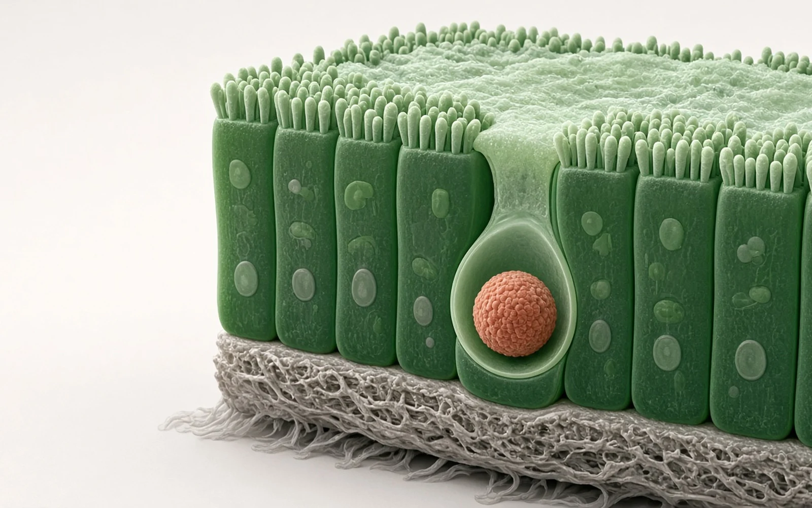

封面示意：赤陶红双抗经上皮pIgR从血液转入肺黏膜腔。图片由 AI 生成，非原文图片。
Marks等在人、食蟹猴、小鼠组织中比对多聚免疫球蛋白受体（pIgR）后，把抗pIgR VHH接到抗血凝素IgG上；食蟹猴单次静脉5 mg/kg后，双抗血清半衰期约1.6天，支气管肺泡灌洗液（BAL）总暴露为对照IgG的5.5倍。
- 跨物种确认pIgR黏膜表达
- 重链N端接上抗pIgR VHH
- 血清快清、BAL暴露升高
- 黏膜组织中的抗体被转走
示意图概括递送逻辑：pIgR在人与食蟹猴黏膜上皮相近、小鼠肝脏则过高；抗pIgR双抗从血液进入上皮，BAL暴露高于普通IgG，并在胃肠和肾组织中更快降到定量限以下。示意图由 AI 生成，依据原文结果绘制，非期刊原图，不代表分子比例。
研究背景与待解问题
IgG进不了黏膜腔是抗体药的老问题。原文引用：治疗性IgG在肺黏液中的暴露大约只有血清的千分之一，血凝素抗体往往要用到约50 mg/kg量级；人每天经pIgR转运约3–5 g二聚IgA。pIgR主要在黏膜上皮基底侧，结合dIgA后转胞吞到顶端并被切下，形成分泌型IgA。用肽、VHH或dIgA打pIgR，先前已在细胞和人微组织里做出定向转胞吞，但啮齿类肝脏pIgR很高，药代会被肝清除带偏。
Marks、Shah（并列贡献）与Cheung、Zwolak（通讯）把问题收成两步：人–食蟹猴–小鼠的表达是否同向；同一抗血凝素骨架接上已表征过的抗pIgR VHH后，在食蟹猴肺和胃肠能不能真正富集。
研究设计
转录组按TPM比较。小鼠为约7–8周C57BL/6J、5雌5雄，并并入公共数据集；食蟹猴为性成熟中华或柬埔寨来源（原文记5只雌雄个体，未再拆分例数）。蛋白用兔单抗EPR23314-256做IHC，细胞块对照加上人180芯、猴240芯组织芯片（每部位n≥3供体）。人猴pIgR蛋白一致率89%。
抗体方面，FM1B108是带CR9114血凝素可变区的单抗；FM1B104在其重链N端融合抗pIgR VHH2。另有不结合血凝素的对照。结合用生物层干涉，抗体和抗原按图注为10 μg/mL。药代：14只食蟹猴单次静脉5 mg/kg，8只给FM1B104、6只给FM1B108；血清点包括给药前及0.5至312小时；BAL用10 mL盐水、不校正上皮衬液稀释；48和312小时取肺、肾和三段小肠。浓度用MSD，定量下限5 ng/mL。参数用非房室分析。表1中BAL/血清例数为4和3，反映交错取样和计划解剖后可用于全曲线的动物数少于入组数。
核心结果
小鼠肝脏高、灵长类黏膜同向
小鼠消化相关组织多在>500 TPM，前列腺和子宫>40 TPM，肝也>500 TPM。食蟹猴结肠和胃>500 TPM，空肠、肝、宫颈、乳腺、肾<500 TPM。人唾液腺、结肠、空肠和平滑肌>500 TPM，肾、肺、回肠、胃、胰、乳腺<500 TPM。种间最大差别在肝：小鼠高，食蟹猴和人很低（讨论给出人约14 TPM、猴约23 TPM）。IHC在人十二指肠黏膜、肾小管、膀胱上皮为膜/浆阳性，肝细胞几乎不染、胆管有顶端染色；食蟹猴类似部位可染但强度弱于人，肝阴性。作者写明：除肾小管、中脑神经元和扁桃体/淋巴结白细胞外，人猴染色格局并不处处相同，猴上可能有抗体非特异。肺里人可见肺泡巨噬阳性，猴为稀少肺泡巨噬和气管顶端上皮。
只有带VHH的分子结合pIgR
FM1B104与FM1B108都结合H1N1血凝素，仅前者结合人pIgR。对照里B23B307结合人及食蟹猴pIgR，MSCB847两者都不结合。因此后续PK用FM1B104对FM1B108，把差异主要归因于pIgR臂。
BAL暴露升高，血清半衰期缩短
FM1B104血清末端半衰期1.57±0.5天，对照9.53±0.5天（结果叙述圆整为1.5天和9.5天）。BAL Cmax：FM1B104为0.78±0.4 μg/mL，对照0.14±0.1 μg/mL。结果写两抗体BAL达峰都在72小时，表1 Tmax分别为60±24和104±55小时。BAL AUC_all为99.46±35.2对18.23±6 h·μg/mL，即5.5倍。72小时血清/BAL比为28对396，作者据此称达峰时约6倍窗口。引言称BAL高暴露维持约1周，与dIgA黏膜半衰期一致。清除率0.9±0.3对0.2±0.03 mL/h/kg（讨论称约4.5倍），分布容积54.8±37对72.8±13 mL/kg，差别主要在清除而非broad分布。原文引用健康成人IgG血清11 mg/mL、BAL 0.0092 mg/mL（比1195），sIgA为1.9和0.013 mg/mL（比146），用以说明该双抗的黏膜比优于稳态IgG/IgA。BAL未校正稀释，浓度只宜作相对比较。
组织里双抗掉得更快
48小时肺组织浓度相近（12.16±5.69对10.14±2.12 ng/mg），312小时双抗降至0.13±0.08 ng/mg，对照仍4.08±1.67 ng/mg，结果称几乎低30倍。十二指肠、空肠、回肠48小时两药相近，312小时双抗均低于定量限，对照仍可测。肾在48小时已见双抗更低（0.95±0.28对3.23±1.61 ng/mg，约3.4倍），312小时同样低于定量限。作者把肾的更快清除联系到灵长类肾小管pIgR染色均匀。
机制解读
原文实验证明：人与食蟹猴pIgR转录和黏膜上皮蛋白格局相近，小鼠肝高表达构成种属陷阱，这为不用小鼠做转胞吞药代提供了组织依据。同一血凝素臂加上pIgR VHH后，血清半衰期缩短、BAL AUC升高、pIgR阳性组织在晚期掉到定量限以下，方向与先前细胞/人微组织转胞吞数据一致。清除升高而分布容积相近，支持主要是受体相关处置，而不是全身容积变大。
作者推测：BAL绝对浓度未校正上皮衬液，不能直接当成黏膜液真值；机制上也还不能定量拆开转胞吞、靶介导清除和其他处置。用抗血凝素是为了减少健康动物里第二靶点的靶介导清除。讨论提出，快速从血中清走也许还能用来清除致病IgG，这是外推，不是本实验读出。肾和胃肠组织下降被解释为抗体已经转到腔面，但本研究没有直接测肠腔或囊液。
局限与不确定
- IHC在猴上整体弱于人，且作者承认除少数部位外染色格局并不一致，可能有种属非特异；膀胱IHC强而转录低，归因于表达细胞占比小，未另做验证。
- 药代表n小于入组n，BAL不校正稀释；研究不是为了区分转胞吞与其他清除路径而设计，也没有感染或囊肿疗效终点。
- 食蟹猴肺pIgR RNA低于人，作者认为猴上的富集可能低估人；结肠则相反。小鼠因肝和食管表达独特，被明确排除。先前抗EGFR的dIgA在多囊肾模型中的数据来自文献，不能当作本双抗已在囊液中验证。
临床/产业意义
若人体药代方向相同，pIgR双抗可能让IgG在较低全身剂量下到达肺黏膜，缩短急性呼吸道感染抗体的起效时间；也给需要进管腔、又怕全身打生长因子受体的适应证（如多囊肾）一条IgG化替代dIgA生产的路径。代价是血清半衰期短、肝外黏膜组织驻留短，慢性给药的剂量节奏会与普通IgG不同。下一步需要疾病模型和正式安全评价，而不是把BAL相对倍数直接写成临床有效浓度。